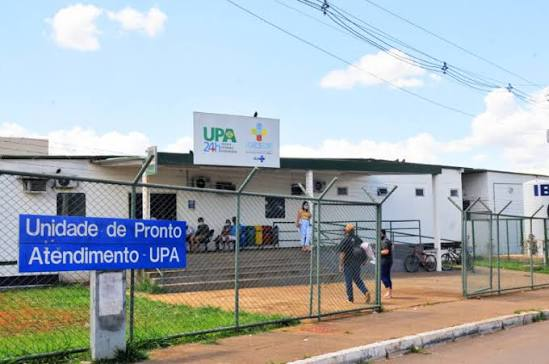
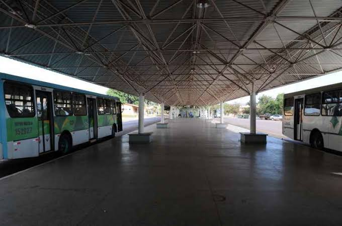
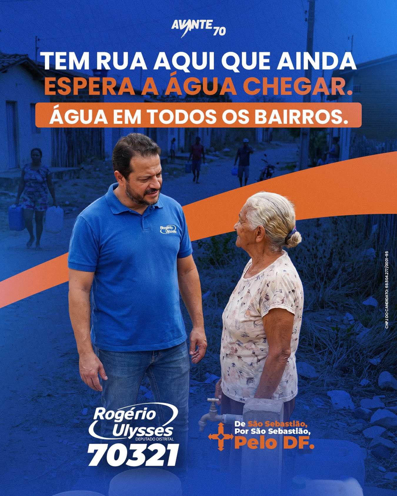

De São Sebastião, por São Sebastião, pelo DF. Terminal de ônibus entregue, UPA construída, paradas de ônibus conquistadas — e muito mais pela frente.
Três paradas que já saíram do papel em São Sebastião — resultado de mandato presente, cobrando e acompanhando de perto cada etapa.

Atuação direta pela construção da Unidade de Pronto Atendimento, levando saúde de urgência para perto de quem mais precisa.

Entrega do terminal de São Sebastião, organizando o transporte coletivo e encurtando o tempo de quem depende do ônibus todos os dias.
Luta constante por paradas de ônibus dignas, com cobertura e segurança para quem espera o transporte todos os dias.

Tem rua em São Sebastião que ainda espera a água chegar. Depois de entregar o terminal e a UPA, esse é o próximo compromisso: levar água a cada bairro, sem exceção.
Rogério Ulysses construiu sua trajetória em São Sebastião do jeito que se constrói confiança: aparecendo, cobrando e entregando. Não são projetos de gabinete — são a UPA que atende, o terminal que organiza o transporte e as paradas de ônibus que protegem quem espera todos os dias.
Agora, candidato a Deputado Distrital pelo Avante, número 70321, ele leva essa mesma prática para a Câmara Legislativa: de São Sebastião, por São Sebastião, pelo DF inteiro.
No dia da eleição, o número é simples de lembrar — assim como as obras que ele já deixou pela cidade.